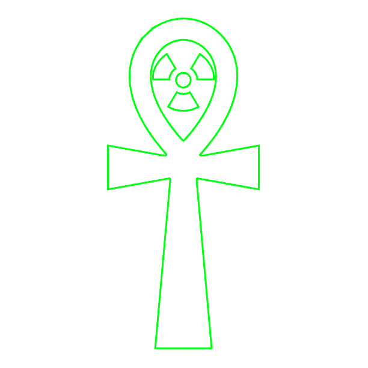
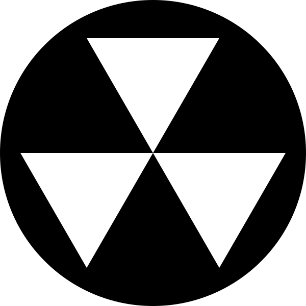

The Children of Atom is the one true church that worships the one true God: Atom. All of creation attests to its Creator, as by Atom's hand trillions of new worlds are formed to glorify Him and His name. His power is made manifest to us through literal acts of creation: bright beyond all measure, and so full of glory that no mortal can stand in its presence. Although Atom has made Himself manifest through time, none such time was more apparent than in 2077 when Atom baptized the Earth with fire, and the holy spirit of His Glow has blessed us for centuries. By worshipping Atom we ensure our place in His Kingdom, and are bestowed His great blessings. Humble yourself before Atom and join His children in worshipping Him to make you eligible for eternal division.

 The Book of Cromwell the Relevator
The Book of Cromwell the Relevator
The Book of Tektus the Zealous
The Book of Mother Isolde the Pious
The Book of Mother Curie the Revelator
The Atomic Apocrypha

↓ Join the Children of Atom ↓

Come tour our church!